총 25종 · 일반 스테이지 24종 + 광산 1종 모두 확정 · 2026-11-16
일반·중간 몬스터는 큼직한 도트, 12R 보스는 더 세밀한 표현. 그림을 누르면 원본 PNG를 엽니다.
기본 몬스터
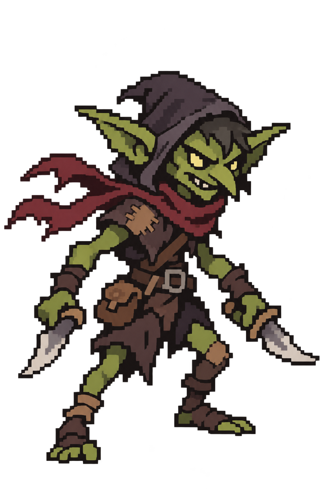
신속
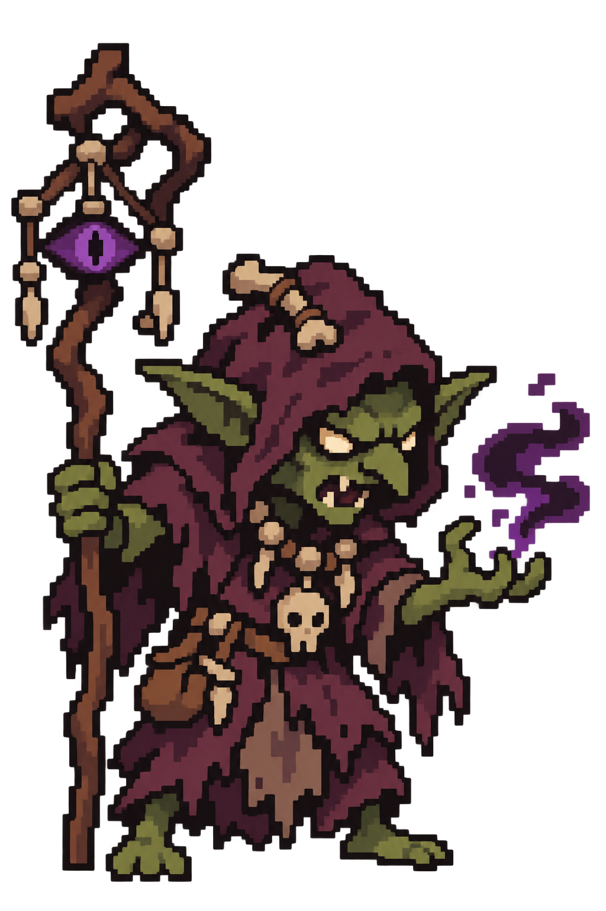
실명
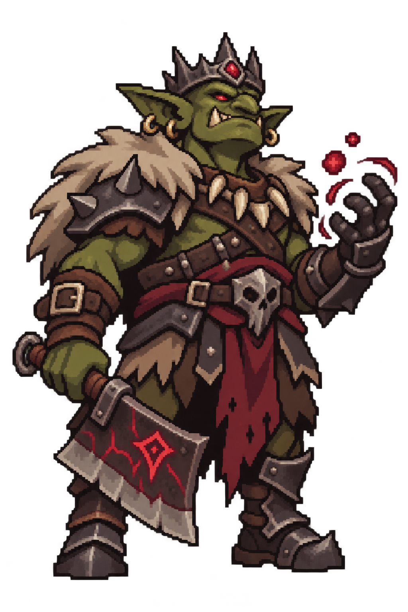
높은 흡혈
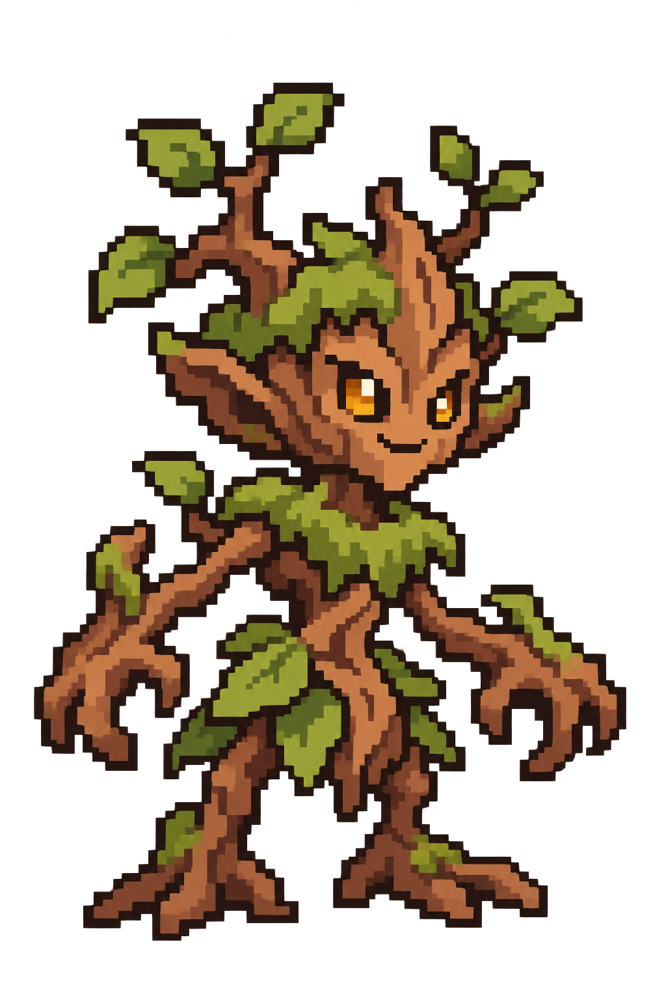
높은 중독, 중독 면역
대량의 방어도, 방어도를 제거하기 전까지 공격력 높음
주기적 버프 강탈, 강탈 시 체력 회복
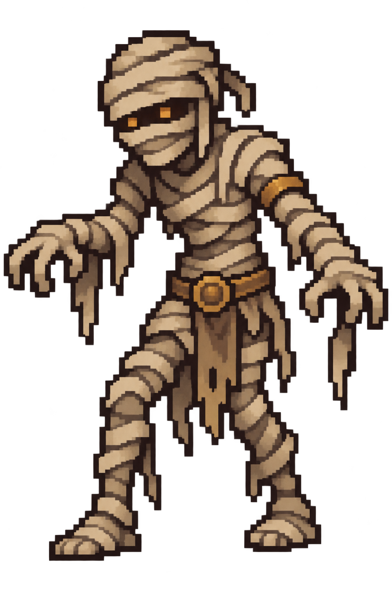
가시
높은 화상, 화상 면역
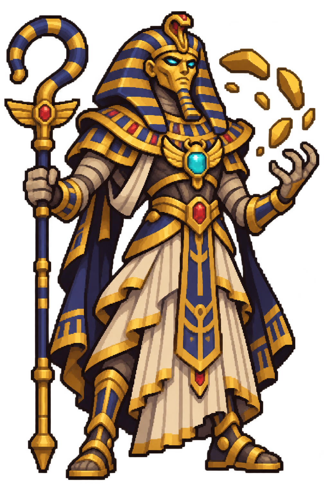
치명 피해 시 체력 30% 회복, 강화, 3초 무적
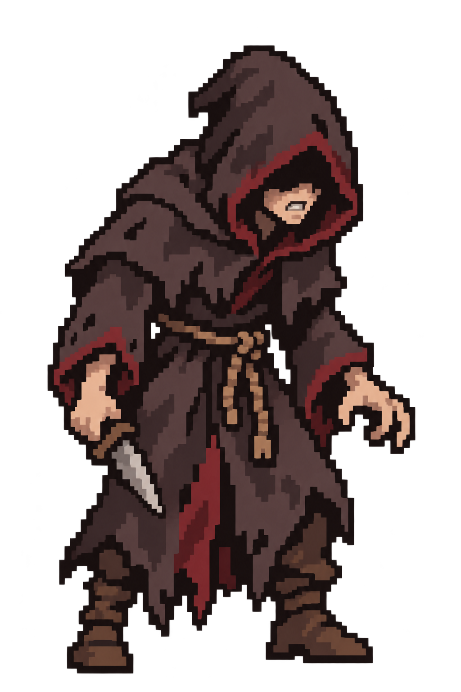
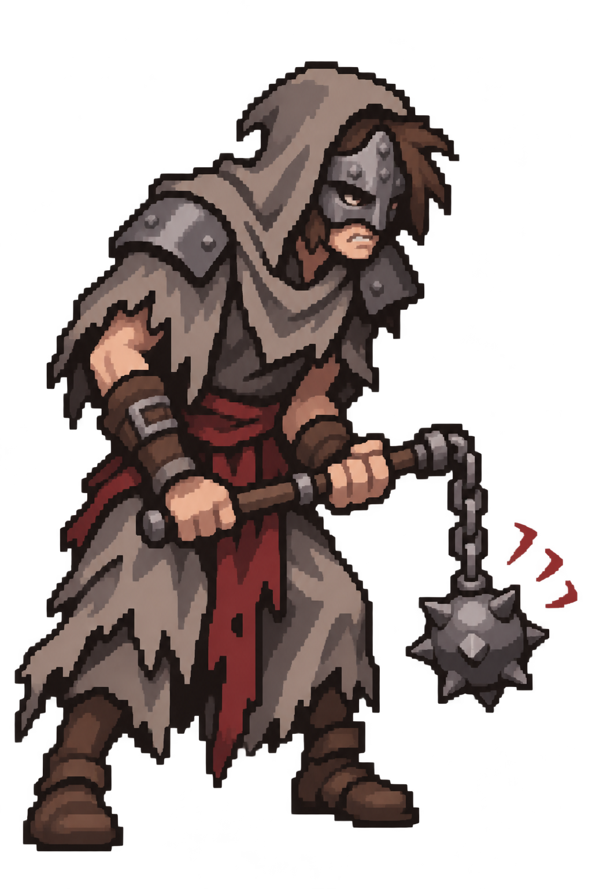
철퇴 적중 시 공격 속도 점진 증가
무작위 디버프 부여, 디버프 중첩당 공격력 증가
기본 몬스터 (특수 능력 없음)
체력이 낮을수록 공격력·공격 속도 증가
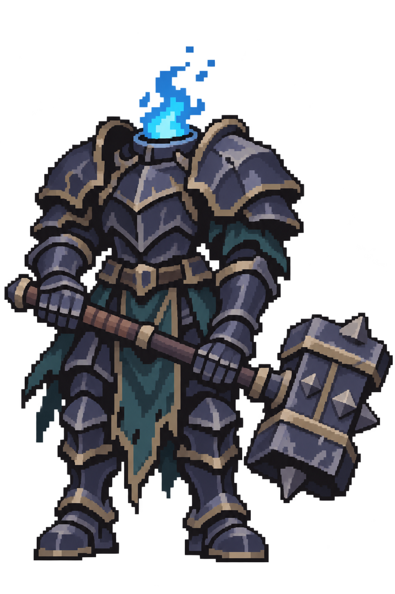
중갑 듀라한, 방어도 보유 적에게 1.5배 추가 피해
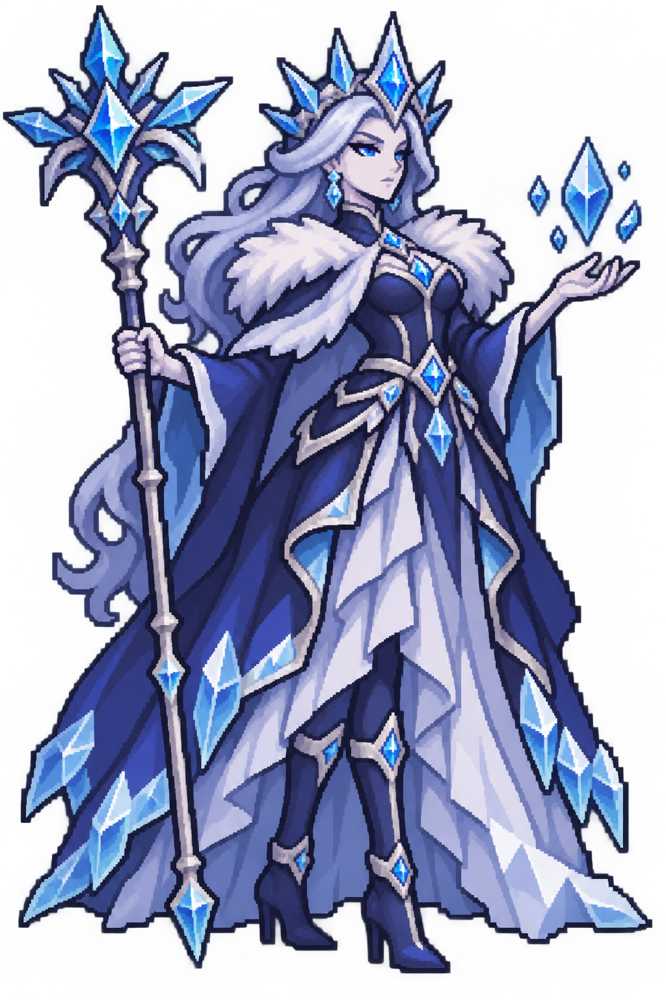
높은 빙결, 빙결 면역
마족, 높은 중독·실명, 중독 면역
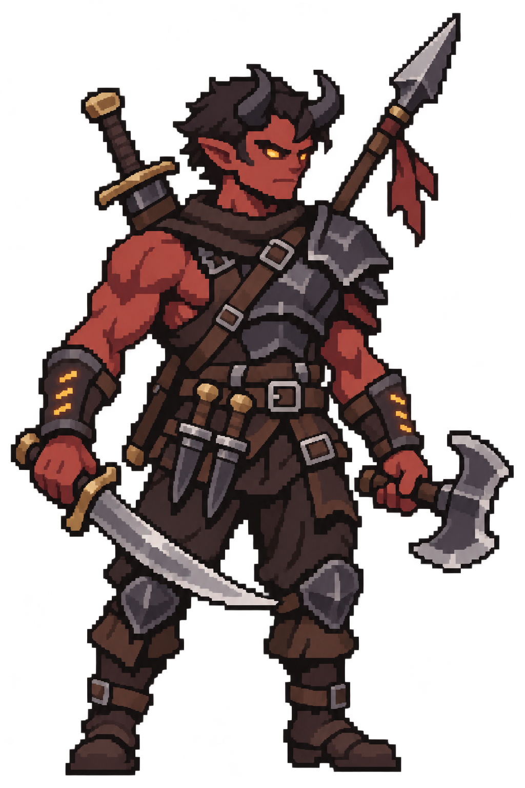
마족, 다수 무기, 무기 적중마다 치명타 확률 1%p 증가
주기적 버프 강탈, 치명 피해 시 체력 30% 회복·강화
기원의 광산 전 스테이지 공통 일반 몬스터 · 특수 능력 별도 지정 없음